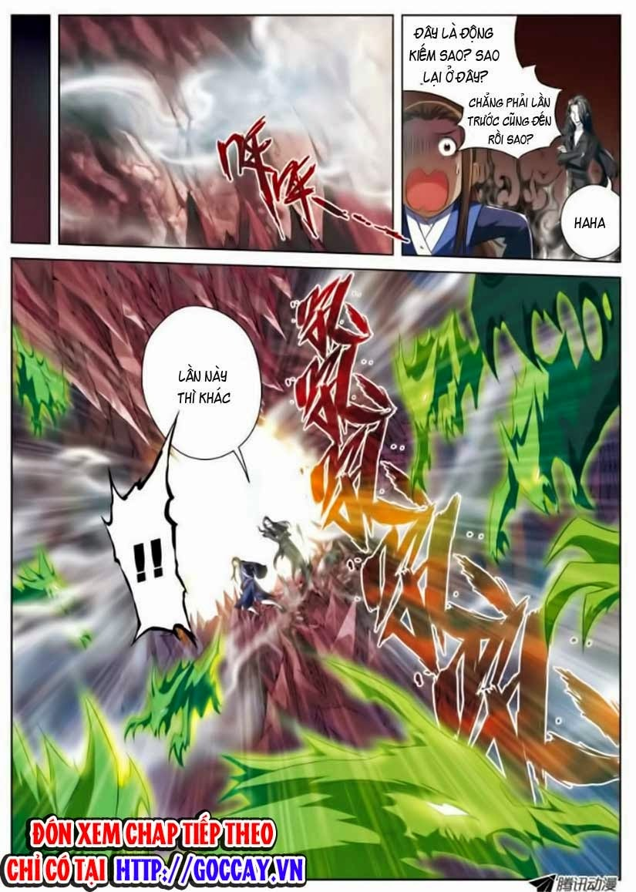

Tên: Tu Chân Thế Giới
Thể Loại: Hành Động, Kiếm Hiệp
Dịch: Nhóm Goccay
Tình Trạng: Đang cập nhật
Kiểu Đọc: Từ Trái Qua Phải
Người Đăng: ngocbn123
Đánh Giá: 8.2/10
Lượt Xem: 123.335
Tóm Tắt: Tả Mạc là 1 đứa trẻ mất trí nhớ, mất đi dung mạo vứt ở ven đường... được trưởng môn Vô Không kiếm môn nhặt về cho làm ngoại môn đệ tử ... Công việc chính của hắn là trồng linh cốc ( 1 loại ngũ cốc có linh khí ) cho môn phái...Nhưng trong 1 lần đi trừ sâu cho ruộng linh cốc ... Tả Mạc bị 1 hạt Bồ Công Anh yêu quái (Bồ yêu )chiếm lấy thức hải... từ đấy Tả Mạc đổi đời... trở thành Linh thực phu rồi thành nội môn đệ tử... . Thiên phú của hắn ko ở tu kiếm nhưng tính cách hắn cố chấp, kiên định ... lại được bồ yêu hướng dẫn nên tu luyện được kiếm ý . Thân phận của Tả Mạc trong môn phái ngày càng tăng lên thì bí ẩn về thân phận của hắn cũng dần dần hé lộ.
Trang 1/17
Trang 2/17
Trang 3/17
Trang 4/17
Trang 5/17
Trang 6/17

Trang 7/17
Trang 8/17
Trang 9/17
Trang 10/17
Trang 11/17
Trang 12/17
Trang 13/17
Trang 14/17
Trang 15/17
Trang 16/17
Trang 17/17
